전기기사 (2011-03-20 기출문제)
1과목: 전기자기학
1. 다음과 같은 맥스웰(Maxwell)의 미분형 방정식에서 의미하는 법칙은?
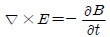
- 패러데이의 법칙
- 암페어의 주회 적분 법칙
- 가우스의 법칙
- 비오사바르의 법칙
(정답률: 76%)

2. 자기 인덕턴스 L[H]인 코일에 전류 I[A]를 흘렸을 때, 자계의 세기가 H[AT/m]였다. 이 코일을 진공 중에서 자화시키는데 필요한 에너지 밀도[J/m3]는?
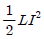
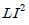
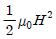
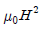
(정답률: 62%)
3. 전류 2π[A]가 흐르고 있는 무한직선 도체로부터 1m 떨어진 P점의 자계의 세기는?
- 1[A/m]
- 2[A/m]
- 3[A/m]
- 4[A/m]
(정답률: 75%)
4. 무한 직선 도선이 λ[C/m]의 선밀도 전하를 가질 때, r[m]의 점 P의 전계 E는 몇 [V/m]인가?
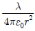
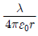
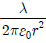
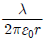
(정답률: 64%)
5. 간격 d[m]인 2개의 평행판 전극 사이에 유전율 ε의 유전체가 있다. 전극 사이에 전압 Vmcosωt[V]를 가했을 때 변위 전류 밀도는 몇 [A/m2]인가?
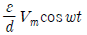
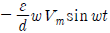
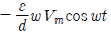
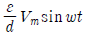
(정답률: 65%)
6. 자기 인덕턴스와 상호인덕턴스와의 관계에서 결합계수 k의 값은?
- 0 ≤ k ≤ 1/2
- 0 ≤ k ≤ 1
- 1 ≤ k ≤ 2
- 1 ≤ k ≤ 10
(정답률: 85%)
7. 철심을 넣은 환상 솔레노이드의 평균 반지름은 20cm이다. 코일에 10A의 전류를 흘려 내부자계의 세기를 2000AT/m로 하기위한 코일의 권수는 약 몇회인가?
- 200
- 250
- 300
- 350
(정답률: 62%)
8. 그림과 같은 유한 길이의 솔레노이드에서 비투자율이 μs 인 철심의 단면적이 S[m2]이고, 길이가 l[m]인 것에 코일을 N회 감고 I[A]를 흘릴 때 자기저항 Rm[AT/ωb]은 어떻게 표현되는가?
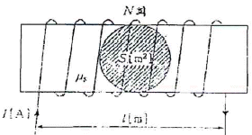
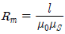
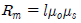
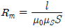
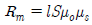
(정답률: 81%)
9. 공기 중에서 5V, 10V로 대전된 반지름 2cm, 4cm의 2개의 구를 가는 철사로 접속했을 때 공통 전위는 몇 [V]인가?
- 6.25
- 7.5
- 8.33
- 10
(정답률: 53%)
10. 진공 중에서 내구의 반지름 a=3cm, 외구의 반지름 b=9cm인 두 동심구사이의 정전용량은 몇 [pF]인가?
- 0.5
- 5
- 50
- 500
(정답률: 57%)
11. 평등 자계를 얻는 방법으로 가장 알맞은 것은?
- 길이에 비하여 단면적이 충분히 큰 솔레노이드에 전류를 흘린다.
- 길이에 비하여 단면적이 충분히 큰 원통형 도선에 전류를 흘린다.
- 단면적에 비하여 길이가 충분히 긴 솔레노이드에 전류를 흘린다.
- 단면적에 비하여 길이가 충분히 긴 원통형 도선에 전류를 흘린다.
(정답률: 69%)
12. 전기 쌍극자의 중점으로부터 거리 r[m] 떨어진 P점에서 전계의 세기는?
- r 에 비례한다.
- r2 에 비례한다.
- r2 에 반비례한다.
- r3 에 반비례한다.
(정답률: 77%)
13. 무한 평면 도체표면에 수직거리 d[m] 떨어진 곳에 정전하 +Q[C]이 있을 때 영상전하와 평면도체 간에 작용하는 힘 F[N]은 어느것인가?
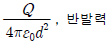
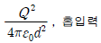
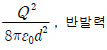
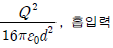
(정답률: 76%)
14. 정전용량이 1[μF]인 공기 콘덴서가 있다. 이 콘덴서 판간의 1/2 인 두께를 갖고 비유전율 ε2=2인 유전체를 그 콘덴서의 한 전극면에 접촉하여 넣었을 때 전체의 정전용량은 몇 [μF]인가?
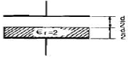
- 2
- 1/2
- 4/3
- 5/3
(정답률: 75%)
15. 유전율이 각각 ε1, ε2 인 두 유전체가 접한 경계면에서 전하가 존재하지 않는다고 할 때 유전율이 ε1인 유전체에서 유전율이 ε2 인 유전체로 전계 E1 이 입사각 θ1=0° 로 입사할 경우 성립되는 식은?
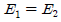
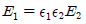
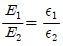
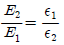
(정답률: 66%)
16. 자성체에 외부의 자계 H0를 가하였을 때 자화의 세기 J와의 관계식은? (단, N 은 감자율, μ는 투자율이다.)
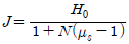
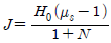
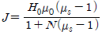
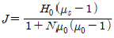
(정답률: 67%)
17. E=i+2j+3k[V/cm] 로 표시되는 전계가 있다. 0.01[μC]의 전하를 원점으로부터 3i[m]로 움직이는데 필요 한 일은 몇 [J]인가?
- 3× 10-8
- 3× 10-7
- 3× 10-6
- 3× 10-5
(정답률: 43%)
18. 고유 저항이 1.7×10-8[Ω·m] 인 구리의 100[kHz] 주파수에 대한 표피의 두께는 약 몇 [mm]인가?
- 0.21
- 0.42
- 2.1
- 4.2
(정답률: 51%)
19. 비투자율 350인 환상철심 중의 평균 자계의 세기가 280[AT/m] 일 때 자화의 세기는 약 몇 [Wb/m2]인가?
- 0.12
- 0.15
- 0.18
- 0.21
(정답률: 70%)
20. 공기 중에 그림과 같이 가느다란 전선으로 반경 a인 원형 코일을 만들고, 이것에 전하 Q 가 균일하게 분포하고 있을때 원형 코일의 중심축상에서 중심으로부터 거리 x 만큼 떨어진 P점의 전계의 세기는 몇 [V/m]인가?
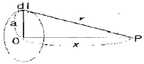
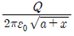
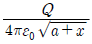
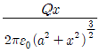
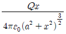
(정답률: 48%)
2과목: 전력공학
21. 발전기나 변압기의 내부고장 검출에 가장 많이 사용되는 계전기는?
- 역상 계전기
- 비율차동 계전기
- 과전압 계전기
- 과전류 계전기
(정답률: 76%)
22. 승압기에 의하여 전압 Ve 에서 Vh 로 승압할 때, 2차 정격전압 e, 자기용량 W인 단상 승압기가 공급할 수 있는 부하 용량은 어떻게 표현되는가?
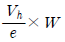
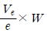
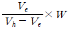
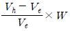
(정답률: 62%)
23. 페란티(ferranti) 효과의 발생 원인은?
- 선로의 저항
- 선로의 인덕턴스
- 선로의 정전용량
- 전로의 누설 컨덕턴스
(정답률: 70%)
24. 전자 계산기에 의한 전력 조류 계산에서 슬랙(slack) 모선의 지정값은? (단, 슬랙 모선을 기준 모선으로 한다. )
- 유효 전력과 무효 전력
- 모선 전압의 크기와 유효전력
- 모선 전압의 크기와 무효전력
- 모선 전압의 크기와 모선 전압의 위상각
(정답률: 69%)
25. 공장이나 빌딩에서 전압을 220V에서 380V로 승압하여 사용할 때, 이 승압의 이유로 가장 타당한 것은?
- 아크 발생 억제
- 배전 거리 증가
- 전력 손실 경감
- 기준 충격 절연강도 증대
(정답률: 74%)
26. 직류 2선식 대비 전선 1가닥 당 송전 전력이 최대가 되는 전송 방식은?(단,선간전압, 전송전류, 역률 및 전송 거리가 같고, 중성선은 전력선과 동일한 굵기이며 전선은 같은 재료를 사용하고, 교류 방식에서 cosθ=1 로 한다. )
- 단상 2선식
- 단상 3선식
- 3상 3선식
- 3상 4선식
(정답률: 46%)
27. 직접 접지 방식에 대한 설명 중 틀린 것은?
- 애자 및 기기의 절연 수준 저감이 가능하다.
- 변압기 및 부속 설비의 중량과 가격을 저하시킬 수 있다.
- 1상 지락사고 시 지락 전류가 작으므로 보호 계전기 동작이 확실하다.
- 지락 전류가 저역율 대전류이므로 과도 안정도가 나쁘다.
(정답률: 60%)
28. 송전단 전압 3300V, 길이 3km인 고압 3상 배전선에서 수전단 전압을 3150V로 유지하려고 한다. 부하전력 1000kW, 역률 0.8(지상)이며 선로의 리액턴스는 무시한다. 이때 적당한 경동선의 굵기[mm2]는? (단, 경동선의 저항률은 1/55[Ω·mm2/m] 이다.)
- 100
- 115
- 130
- 150
(정답률: 45%)
29. 회전속도의 변화에 따라서 자동적으로 유량을 가감하는 것은?
- 예열기
- 급수기
- 여자기
- 조속기
(정답률: 72%)
30. SF6 가스 차단기에 대한 설명으로 옳지 않은것은?
- 공기에 비하여 소호 능력이 약 100배 정도이다.
- 절연 거리를 적게할 수 있어 차단기 전체를 소형, 경량화 할 수 있다.
- SF6 가스를 이용한 것으로서 독성이 있으므로 취급에 유의 해야 한다.
- SF6 가스 자체는 불활성기체이다.
(정답률: 79%)
31. 증기압, 증기 온도 및 진공도가 일정할 때에 추기할 때는 추기하지 않을 때보다 단위 발전량 당 증기 소비량과 연료 소비량은 어떻게 변화하는가?
- 증기 소비량, 연료 소비량은 다 감소한다.
- 증기 소비량은 증가하고 연료 소비량은 감소한다.
- 증기 소비량은 감소하고 연료 소비량은 증가한다.
- 증기 소비량, 연료 소비량은 다 증가한다.
(정답률: 61%)
32. 이상 전압에 대한 방호장치로 거리가 먼것은?
- 피뢰기
- 방전코일
- 서지흡수기
- 가공지선
(정답률: 70%)
33. 3상 154kV 송전선의 일반회로 정수가 A=0.9, B=150, C=j0.901×10-3, D=0.930일 때 무부하시 송전단에 154kV를 가했을 때 수전단 전압은 몇 [kV]인가?
- 143
- 154
- 166
- 171
(정답률: 60%)
34. 파동 임피던스 Z1=400[Ω]인 가공 선로에 파동 임피던 스 50Ω 인 케이블을 접속하였다. 이 때 가공선로에 e1=80kV 인 전압파가 들어왔다면 접속점에서의 전압의 투과파는 약 몇 [kV]가 되겠는가?
- 17.8
- 35.6
- 71.1
- 142.2
(정답률: 51%)
35. 피상전력 P[kVA], 역률 cosθ 인 부하를 역률 100[%]로 개선하기 위한 전력용 콘덴서의 용량은 몇 [kVA]인가?
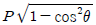
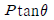
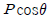
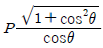
(정답률: 59%)
36. 전력선과 통신선 사이에 그림과 같이 차폐선을 설치하며, 각 선사이의 상호임피던스를 각각 Z12, Z1s, Z2s 라 하고 차폐선 자기 임피던스를 Zs라 할 때 저감계수를 나타낸 식은?
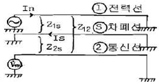
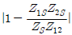
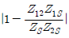
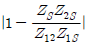
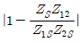
(정답률: 56%)
37. 저압 뱅킹 배전방식의 장점이 아닌것은?
- 전압 강하 및 전력 손실이 경감된다.
- 변압기 용량 및 저압선 동량이 절감된다.
- 부하 변동에 대한 탄력성이 좋다.
- 경부하시의 변압기 이용 효율이 좋다.
(정답률: 49%)
38. 가스 냉각형 원자로에 사용되는 연로 및 냉각재는?
- 천연 우라늄, 수소가스
- 농축 우라늄, 질소
- 천연 우라늄, 이산화 탄소
- 농축 우라늄, 흑연
(정답률: 48%)
39. 다중 접지 계통에 사용되는 재폐로 기능을 갖는 일종의 차단기로서 과부하 또는 고장 전류가 흐르면 순시동작하고, 일정시간 후에는 자동적으로 재폐로 하는보호 기기는?
- 리클로저
- 라인퓨즈
- 섹셔널라이저
- 고장구간 자동 개폐기
(정답률: 60%)
40. 전력선에 영상전류가 흐를 때 통신선로에 발생되는 유도장해는?
- 고조파 유도장해
- 전력 유도장해
- 정전 유도장해
- 전자 유도장해
(정답률: 69%)
3과목: 전기기기
41. 동기 전동기의 기동법 중 자기동법에서 계자 권선을 단락하는 이유는?
- 고전압의 유도를 방지한다.
- 전기자 반작용을 방지한다.
- 기동 권선으로 이용한다.
- 기동이 쉽다.
(정답률: 54%)
42. 동기기의 전기자 권선에서 슬롯수가 48인 고정자가 있다. 여기에 3상 4극의 2층권을 시행할 때에 매극 매상의 슬롯수와 총 코일수는?
- 4, 48
- 12, 48
- 12, 24
- 9, 24
(정답률: 65%)
43. 동기기의 전기자 권선에서 전압의 리플(맥동)을 줄이기 위한 가장 좋은 방법은?
- 적당한 저항을 직렬로 접속한다.
- 적당한 리액터를 직렬로 접속한다.
- 커패시터를 직렬로 접속한다.
- 커패시터를 병렬로 접속한다.
(정답률: 54%)
44. 직류 발전기에서 양호한 정류를 얻기 위한 방법이 아닌것은?
- 보상 권선을 설치한다.
- 보극을 설치한다.
- 브러시의 접촉 저항을 크게한다.
- 리액턴스 전압을 크게 한다.
(정답률: 71%)
45. 6극인 유도 전동기의 토크가 r 이다. 극수를 12극으로 변환하였다면 변환한 후의 토크는?
- r
- 2r
- 3r
- 4r
(정답률: 72%)
46. 동기 전동기에 관한 설명 중 옳지 않은 것은?
- 기동 토크가 작다.
- 역률을 조정할 수 없다.
- 난조가 일어나기 쉽다.
- 여자기가 필요하다.
(정답률: 71%)
47. 변압기의 3상 전원에서 2상 전원을 얻고자 할 때 사용하는 결선은?
- 스코트 결선
- 포크 결선
- 2중 델타 결선
- 대각 결선
(정답률: 76%)
48. 철심의 단면적이 0.085[m2], 최대 자속 밀도가 1.5[wb/m2]인 변압기가 60[Hz]에서 동작하고 있다. 이 변압기의 1차 및 2차 권수는 120, 60이다. 이 변압기의 1차측에 발생하는 전압의 실효치는 약 몇 [V]인가?
- 4076
- 2037
- 918
- 496
(정답률: 52%)
49. 변압기의 임피던스 전압이란?
- 여자전류가 흐를 때의 변압기 내부 전압강하
- 여자전류가 흐를 때의 2차측 단자 전압
- 정격전류가 흐를 때의 2차측 단자 전압
- 정격전류가 흐를 때의 변압기 내부 전압강하
(정답률: 63%)
50. 유도 전동기 원선도 작성에 필요한 시험과 원선도에서 구할 수 있는 것이 옳게 배열된 것은?
- 무부하시험, 1차 입력
- 부하시험, 기동전류
- 슬립측정시험, 기동 토크
- 구속시험, 고정자 권선의 저항
(정답률: 67%)
51. 회전자가 슬립 s로 회전하고 있을 때 고정자와 회전자의 실효 권수비를 α 라 하면, 고정자 기전력 E1 과 회전자 기전력 E2 와의 비는?(오류 신고가 접수된 문제입니다. 반드시 정답과 해설을 확인하시기 바랍니다.)
- α/s
- sα
- (1-s)α
- α/(1-s)
(정답률: 47%)
52. 1차 전압 6600[V], 권수비 30인 단상 변압기로 전등부하에 30[A]를 공급할 때의 입력[kW]은? (단, 변압기의 손실은 무시한다. )
- 4.4
- 5.5
- 6.6
- 7.7
(정답률: 72%)
53. 다이오드를 이용한 저항 부하의 단상반파 정류회로에서 맥동률(리플률)은?
- 0.48
- 1.11
- 1.21
- 1.41
(정답률: 46%)
54. 3상 유도전동기의 기동법으로 사용되지 않는 것은?
- Y-Δ기동법
- 기동 보상기법
- 2차 저항에 의한 기동법
- 극수 변환 기동법
(정답률: 47%)
55. 단상 유도 전압 조정기의 양 권선이 일치할 때 직렬 권선의 전압이 150[V], 전원 전압이 220[V]일 경우 1차와 2차 권선의 축 사이의 각도가 30[°]이면, 부하측 전압은 약 몇 [V]인가?
- 370
- 350
- 220
- 150
(정답률: 40%)
56. 직류 분권 전동기의 기동시에는 계자 저항기의 저항값을 어떻게 해두어야 하는가?
- 0으로 해둔다.
- 최대로 해둔다.
- 중위로 해둔다.
- 끊어 놔둔다.
(정답률: 61%)
57. 3상 변압기를 병렬 운전하는 경우 불가능한 조합은?
- Δ-Δ 와 Y-Y
- Δ-Y 와 Y-Δ
- Δ-Y 와 Δ-Y
- Δ-Y 와 Δ-Δ
(정답률: 76%)
58. 권선형 유도전동기으 토크-속도 곡선이 비례추이 한다는것은 그 곡선이 무엇에 비례해서 이동하는 것을 말하는가?
- 2차 효율
- 출력
- 2차 회로의 저항
- 2차 동손
(정답률: 62%)
59. 60[hz], 4극의 유도 전동기의 슬립이 3[%]인 때의 매분 회전수는?
- 1260[rpm]
- 1440[rpm]
- 1455[rpm]
- 1746[rpm]
(정답률: 70%)
60. 출력 P0, 2차 동손 Pc2, 2차 입력 P2, 및 슬립 s 인 유도 전동기에서의 관계는?
- P2 : Pc2 : P0 = 1:s:(1-s)
- P2 : Pc2 : P0 = 1:(1-s):s
- P2 : Pc2 : P0 = 1:s2:(1-s)
- P2 : Pc2 : P0 = 1:(1-s):s2
(정답률: 64%)
4과목: 회로이론 및 제어공학
61. 다음 중
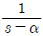
을 z변환하면?(정답률: 38%)
62. 2차 시스템의 감쇄율 δ 가 δ>1 이면 어떤 경우인가?
- 비 제동
- 과 제동
- 부족 제동
- 발산
(정답률: 74%)
63. 그림의 신호 흐름 선도에서 y2/y1은?
(정답률: 66%)
64. 보드 선도의 이득 교차점에서 위상각 선도가 -180° 축의 상부에 있을 때 이 계의 안정 여부는?
- 불안정하다.
- 판정 불능이다.
- 임계 안정이다.
- 안정하다.
(정답률: 65%)
65. 특성 방정식(s+1)(s+2)(s+3)+k(s+4)=0의 완전 근궤적상 k=0인 점은?
- s=-4인 점
- s=-1,-2,-3인 점
- s=1,2,3인 점
- s=4인 점
(정답률: 65%)
66. Nyquist 판정법의 설명으로 틀린 것은?
- Nyquist 선도는 제어계의 오차 응답에 관한 정보를 준다.
- 계의 안정을 개선하는 방법에 대한 정보를 제시해 준다.
- 안정성을 판별하는 동시에 안정도를 제시해 준다.
- Routh-Hurwitz 판정법과 같이 계의 안정 여부를 직접 판정해 준다.
(정답률: 55%)
67. 어떤 시스템을 표시하는 미분 방정식이 인 경우 x(t) 를 입력, y(t) 를 출력이라면, 이 시스템의 전달함수는? (단, 모든 초기 조건은 0이다.)
(정답률: 68%)
68. 그림과 같은 폐루프 전달 함수 T=C/R 에서 H에 대한 감도 는?
(정답률: 45%)
69. 선형 시불변 시스템의 상태 방정식이 로 표시될 때, 상태 천이 방정식(state transistion equation)의 식은? (단, ø(t) 는 일치하는 상태 천이 행렬이다. )
(정답률: 47%)
70. 인 계의 이득 여유는?
- -20[dB]
- -10[dB]
- 1[dB]
- 10[dB]
(정답률: 61%)
71. RLC 직렬 회로에서 자체 인덕턴스 L=0.02[mH]와 선택도 Q=60일 때 코일의 주파수 f=2[MHz]였다. 이 코일의 저항은 몇 [Ω]인가?
- 2.2
- 3.2
- 4.2
- 5.2
(정답률: 40%)
72. 각 상전압이 Va=40sinωt[V], Vb=40sin(ωt+90)°[V], Vc=40sin(ωt-90)°[V] 이라 하면, 영상 대칭분의 전압은?
(정답률: 59%)
73. 분포 정수 회로에서 선로의 특성 임피던스를 Z0 , 전파 정수를 라 할 때 무한장 선로에 있어서 송전단에서 본 직렬 임피던스는?
(정답률: 64%)
74. 비정현파 전류 i(t)=56sinωt+25sin2ωt+30sin(3ωt+30°)+40sin(4ωt+60°) 로 주어질 때 왜형률은 약 얼마인가?
- 1.4
- 1.0
- 0.5
- 0.1
(정답률: 63%)
75. R=5[Ω], L=20[mH], 및 가변 콘덴서 C 로 구성된 RLC 직렬 회로에 주파수 1000[Hz] 인 교류를 가한 다음 C 를 가변시켜 직렬 공진 시킬 때 C 의 값은 약 몇 [μF]인가?
- 1.27
- 2.54
- 3.52
- 4.99
(정답률: 52%)
76. 4단자 회로에서 4단자 정수를 A,B,C,D라 하면 영상 임피던스 Z01/Z02 는?
- D/A
- B/C
- C/B
- A/D
(정답률: 64%)
77. 그림과 같은 회로에 t=0 에서 S를 닫을 때의 방전 과도 전류 i(t)[A] 는?
(정답률: 54%)
78. 라플라스 변환함수 에 대한 역변환 함수 f(t) 는?
- e-2tcos3t
- e-3tcos3t
- e3tcos2t
- e2tcos3t
(정답률: 63%)
79. 대칭 6상 성형(STAR) 결선에서 선간 전압과 상전압의 관계가 바르게 나타난 것은? (단, E1 : 선간전압, Ep : 상전압)
(정답률: 58%)
80. 기전력 E, 내부저항 r 인 전원으로부터 부하저항 RL 에 최대 전력을 공급하기 위한 조건과 그 때의 최대 전력 Pm은?
(정답률: 60%)
5과목: 전기설비기술기준 및 판단기준
81. 최대 사용 전압이 23kV인 권선으로서 중성선 다중 접지 방식의 전로에 접속되는 변압기 권선의 절연내력시험 시험전압은 몇 [kV]인가?
- 21.16
- 25.3
- 28.75
- 34.5
(정답률: 62%)
82. 사용 전압이 170[kV]일 때 울타리 담등의 높이와 울타리담 등으로부터 충전부분까지의 거리[m]의 합계는?
- 5
- 5.12
- 6
- 6.12
(정답률: 55%)
83. 고압 가공전선로의 지지물로 A종 철근 콘크리트주를 사용하고, 전선으로는 단면적 22[mm2]의 경동연선을 사용한다면 경간은 최대 몇 [m]이하이어야 하는가?
- 150
- 250
- 300
- 500
(정답률: 30%)
84. 특고압 옥내 전기설비를 시설할 때 특고압 옥내 배선의 사용 전압은 몇 [kV]이하 이어야 하는가? (단, 케이블 트레이 공사에 의하지 않으며, 위험의 우려가 없도록 시설한다. )
- 100
- 170
- 220
- 350
(정답률: 51%)
85. 직류식 전기철도용 전차선로의 절연 부분과 대지간의 절연 저항은 사용전압에 대한 누설 전류가 궤도의 연장 1[km] 마다 가공 직류 전차선(강체 조가식은 제외)에서 몇 [mA]를 넘지 아니하도록 유지하여야 하는가?(오류 신고가 접수된 문제입니다. 반드시 정답과 해설을 확인하시기 바랍니다.)
- 5
- 10
- 50
- 100
(정답률: 46%)
86. 중량물이 통과하는 장소에 비닐 외장케이블을 직접 매설식으로 시설하는 경우 매설깊이는 몇 [m]이상이어야 하는가?(관련 규정 개정전 문제로 여기서는 기존 정답인 3번을 누르면 정답 처리됩니다. 자세한 내용은 해설을 참고하세요.)
- 0.8
- 1.0
- 1.2
- 1.5
(정답률: 58%)
87. 사용전압 22.9kV 가공전선이 철도를 횡단하는 경우, 전선의 레일면상의 높이는 몇 [m]이상이어야 하는가?
- 5
- 5.5
- 6
- 6.5
(정답률: 68%)
88. 특고압의 전기집진장치, 정전도장장치 등에 전기를 공급하는 전기 설비 시설로 적합하지 아니한 것은?(오류 신고가 접수된 문제입니다. 반드시 정답과 해설을 확인하시기 바랍니다.)
- 전기 집진 응용장치에 전기를 공급하는 변압기 1차측 전로에는 그 변압기 가까운 곳에 개폐기를 시설할 것
- 케이블을 넣는 방호장치와 금속체 부분에는 제2종 접지 공사를 할 것
- 잔류 전하에 의하여 사람에게 위험을 줄 우려가 있으면 변압기 2차측에 잔류 전하를 방전하기 위한 장치를 할 것
- 전기집진장치는 그 충전부에 사람이 접촉할 우려가 없도록 시설할 것
(정답률: 56%)
89. 비접지식 고압전로에 시설하는 금속제 외함에 실시하는 제 1종 접지공사의 접지극으로 사용할 수 있는 건물의 철골 기타의 금속제는 대지와의 사이에 전기저항 값을 얼마이하로 유지하여야 하는가?(오류 신고가 접수된 문제입니다. 반드시 정답과 해설을 확인하시기 바랍니다.)
- 2[Ω]
- 3[Ω]
- 5[Ω]
- 10[Ω]
(정답률: 30%)
90. 지중전선로에 사용하는 지중함의 시설기준으로 옳지 않은 것은?
- 크기가 1[m3] 이상인 것에는 밀폐하도록 할 것
- 뚜껑은 시설자 이외의 자가 쉽게 열 수 없도록 할 것
- 지중함안의 고인 물을 제거할 수 있는 구조일 것
- 견고하고 차량 기타 중량물의 압력에 견딜 수 있을 것
(정답률: 61%)
91. 시가지에 시설하는 고압 가공전선으로 경동선을 사용하려면 그 지름은 최소 몇 [mm]이어야 하는가?
- 2.6
- 3.2
- 4.0
- 5.0
(정답률: 37%)
92. 특고압 가공전선이 교류 전차선과 교차하고 교류 전차선의 위에 시설되는 경우, 지지물로 A종 철근 콘크리트 주를 사용한다면 특고압 가공전선로의 경간은 몇 [m] 이하로 하여야 하는가?
- 30
- 40
- 50
- 60
(정답률: 39%)
93. 220[V] 저압 전동기의 절연내력 시험 전압은 몇 [V]인가?
- 300
- 400
- 500
- 600
(정답률: 58%)
94. 사용 전압 22.9[kV]인 가공 전선과 지지물과의 이격 거리는 일반적으로 몇 [cm]이상이어야 하는가?
- 5
- 10
- 15
- 20
(정답률: 50%)
95. 특고압 및 고압 전로의 절연 내력 시험을 하는 경우, 시험 전압은 연속으로 몇 분 동안 가하여 시험하여야 하는가?
- 1
- 2
- 5
- 10
(정답률: 65%)
96. 관, 암거 기타 지중전선을 넣은 방호 장치의 금속제 부분 및 지중 전선의 피복으로 사용하는 금속체에는 제 몇 종 접지 공사를 하여야 하는가?(오류 신고가 접수된 문제입니다. 반드시 정답과 해설을 확인하시기 바랍니다.)
- 제 1종
- 제 2종
- 제 3종
- 특별 제 3종
(정답률: 51%)
97. 다음 중 고압 옥내배선의 시설로서 알맞은 것은?
- 케이블 트레이 공사
- 금속관 공사
- 합성 수지관 공사
- 가요 전선관 공사
(정답률: 55%)
98. 버스 덕트 공사에 의한 저압 옥내배선에 대한 시설로 잘못 설명한 것은?(관련 규정 개정전 문제로 여기서는 기존 정답인 2번을 누르면 정답 처리됩니다. 자세한 내용은 해설을 참고하세요.)
- 환기형을 제외한 덕트의 끝부분은 막을 것
- 사용 전압이 400[V] 미만인 경우에는 덕트에 제 2종 접지 공사를 할 것
- 덕트의 내부에 먼지가 침입하지 아니하도록 할 것
- 사용 전압이 400[V] 이상인 경우에는 덕트에 특별 제 3종 접지 공사를 할 것
(정답률: 60%)
99. 가공 전선로의 지지물에 시설하는 통신선 또는 이에 직접 접속하는 가공 통신선의 높이에 대한 설명으로 적합한 것은?
- 도로를 횡단하는 경우에는 지표상 5[m]이상
- 철도 또는 궤도를 횡단하는 경우에 레일면상 6.5[m]이상
- 횡단 보도교 위에 시설하는 경우에 그 노면상 3.5[m]이상
- 도로를 횡단하며 교통에 지장이 없는 경우는 4.5[m]이상
(정답률: 60%)
100. 발전기의 보호장치로서 사고의 종류에 따라 자동적으로 전로로부터 차단하는 장치를 시설하여야 하는 경우가 아닌 것은?
- 발전기에 과전류나 과전압이 생긴 경우
- 용량이 50[kVA] 이상의 발전기를 구동하는 수차의 압유 장치의 유압이 현저하게 저하한 경우
- 용량 100[kVA] 이상의 발전기를 구동하는 풍차의 압유 장치의 유압이 현저하게 저하한 경우
- 용량이 10000[kVA]이상인 발전기의 내부에 고장이 생긴 경우
(정답률: 54%)